A look at level-design techniques from Witcher 3, Zelda and Metro Exodus — drawing from my background discovering games like SimCity, Caesar and Settlers in 1998, studying programming, and later joining EA as a game engine programmer. Over time, game design — particularly level design and player guidance — became a growing passion.
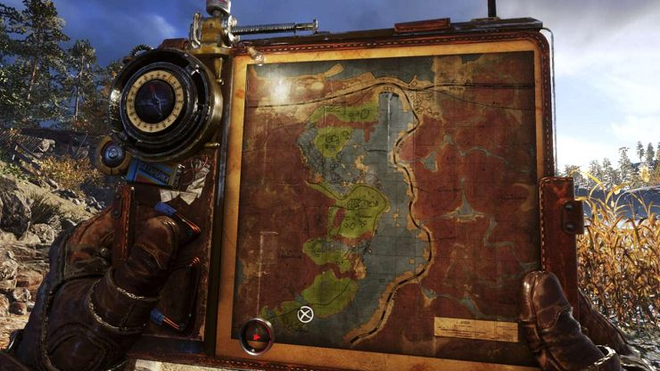
Landmarks
Witcher 3 has a realistic but disorienting open world that requires frequent map checks. Zelda's sparser landscapes paradoxically require less map usage. Zelda achieves this through careful placement of landmarks and points of interest visible from a distance, combined with a "five-minute rule" for mob encounters.
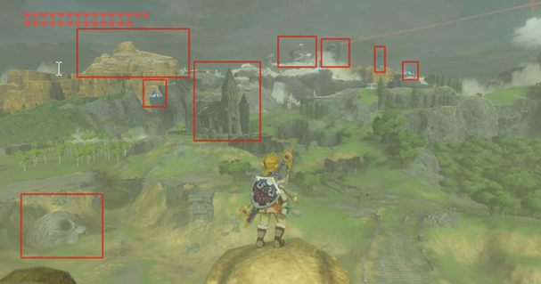
The term "Weenie" was coined by Walt Disney, who noticed "his dog's head always followed his hand when he held a hot dog." Cinderella Castle serves as Disneyland's main weenie, with Matterhorn Mountain and Big Thunder Mountain as secondary ones. The principle: guests (or players) should always know where they are by looking at weenies.
Try disabling navigation aids in Witcher, Zelda and Metro for a transformed experience.
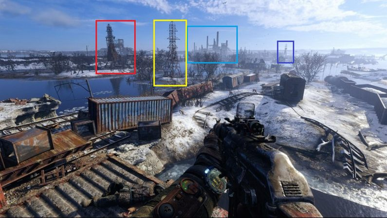
Golden Path (Story)
Plot content at the level makes up "no more than a third of all content, or even less." The best designers create worlds that "naturally lead you to such places, showing signs of the world to those who have turned off the quest marker." Interestingly, many of these in-world signs originate as early-development placeholders — "floating text in the air turns into a sign or a pointer" once enriched with lore.
Hide and reveal: simply placing a huge tower far away would become tiresome, so landmarks are periodically hidden and revealed from different angles as the player progresses — a technique borrowed from Roman temple architecture.
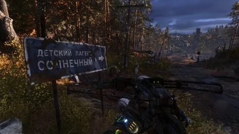
Breadcrumbs (Hints)
Explicit directional indicators break immersion and become tedious. They're reserved for "peaceful locations, level entrances and exits, or areas with obvious biome changes."
More effective are subtle approaches: light/shadow manipulation, interactive elements (crates, diaries, collectibles), and the "go where it's brighter" principle used in indoor locations — from wall lamps to glowing mushrooms. Even enemy placement can guide players toward the next story beat.
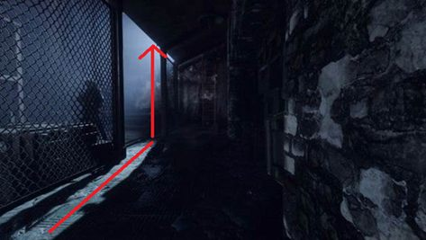
Hints can be positive or negative. For example, teaching players that "blue doors don't open" creates a consistent rule that can later be subverted for puzzles. Negative hints establish clear boundaries: poisonous areas, burning objects, radiation zones.
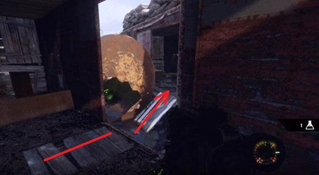
Walls
Modern games often rely on invisible walls, contrasting with older titles like Quake and Unreal that used physical, visible boundaries (corridors, cliffs, mountains) that felt natural. The frustration arises when a player can't pass through a partially destroyed door despite having broken down an identical one during a story sequence.
The key principle: limitations must be incorporated into the game world. "Placing a car, a ravine, a toxic puddle, or even a fence made of barbed wire" works if it fits the setting. Barbed wire or iron-barred doors are especially effective when designers need to show what lies ahead.
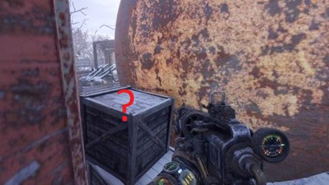
Affordance
The core principle: an element's appearance must match its function. "If it's a ladder, you should be able to climb it; if it's a hole, you should be able to crawl through it." When one door opens but an identical adjacent door doesn't, it "causes irritation and confusion."
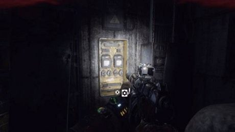
Visual Shapes
Shape serves as a signifier beyond just interactive objects. Rectangular waist-height objects become recognizable as cover after a few uses. Perceptual associations: "round objects are perceived as soft and fragile, while square ones are perceived as solid and reliable. Triangular-shaped objects are perceived as dangerous."
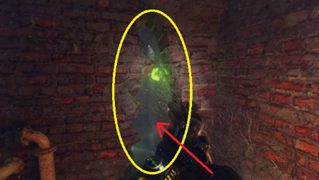
Color coding reinforces purpose without explicit hints — yellow for electrical boxes, red for canisters. Contrasting colors, flashing lights, glowing mushrooms, and moving water all draw player attention.
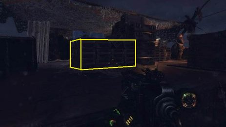
Device Lock
Device locks or special items let players explore freely but block story/location progression until the required item is obtained. In Metro Exodus's Caspian Sea level, the van serves as the device lock — players can bypass on foot, but story conversations require the car. In the Valley level, the crossbow functions similarly, with some puzzles unsolvable without it. The designers "left that possibility open" for exploration without the item, which earns "top marks."
Openings Attract
Caves, doors, and basements naturally attract exploration. Such spaces "possess an aura of mystery, and people want to find out what lies inside." Open spaces tend to host combat, while rooms serve as psychologically safe zones.
A GDC talk by Ubisoft about Far Cry 3: randomly placed arches and door frames caused uninformed testers to pass through them "twice as often as those who were told they were just test objects." Transition highlighting matters too — different color temperatures distinguish indoors from outdoors. Exteriors use cooler tones while "warm yellow tones are often used indoors."
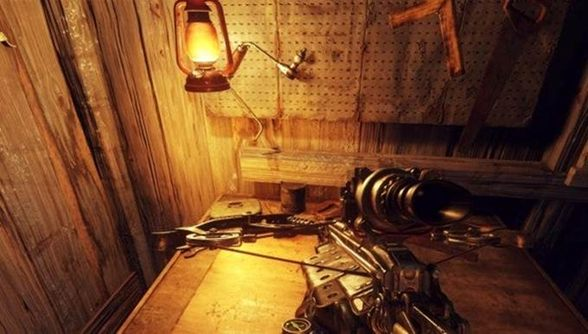
Gates & Valves
Gates and puzzles are "one of the cheapest ways to pause the plot until certain conditions are met: kill all enemies, move debris from the road, turn on electricity." Closing a door behind the player lets designers unload previous areas, freeing resources for more detailed environments ahead.
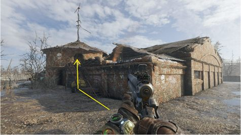
Leading Lines
Borrowed from painting composition, leading lines use environmental elements (roads, pipes, cables) to create natural-looking directional arrows. In Metro Exodus, "both the wagons on the left and the train on the right are intentionally slightly turned towards the path to form an arrow" — the first thing seen when descending from the Aurora.
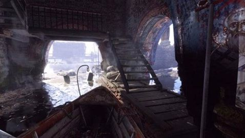
Pipe bulges placed only on the correct-exit side demonstrate subtle directional cueing. The comparison to machine learning: "you only get results when the training set is properly composed" — random placement produces no effect.
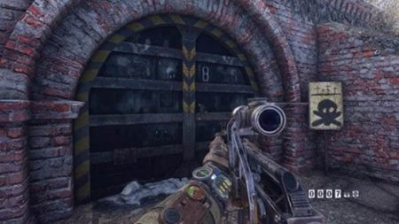
Pinching
Pinching directs players to specific locations by restricting free movement through strategically placed objects. Since "people don't like being forcibly led through the story," obvious pinching must be applied carefully with natural justifications — like a boat being the only way to reach a monastery.
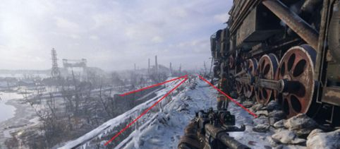
Framing & Composition
Borrowed from photography, framing surrounds important objects (landmarks, enemies, characters, cave entrances) to direct attention. It works especially well for "beautiful views, transitioning the level's narrative, or introducing important characters."
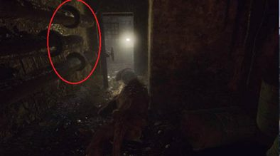
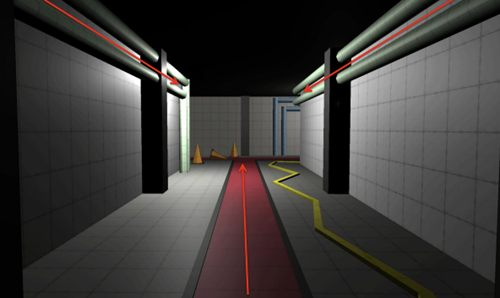
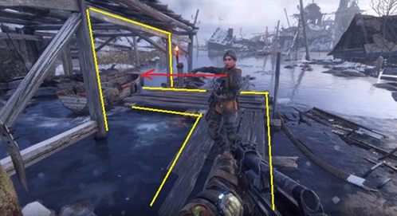
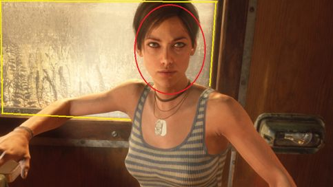
Recommended Books
- "Level Up! The Guide to Great Video Game Design" — Scott Rogers
- "101 Things I Learned in Architecture School" — Matthew Frederick